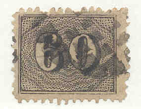
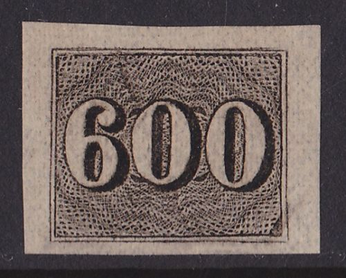
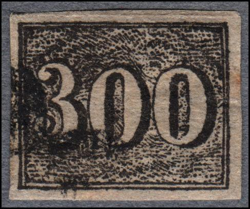
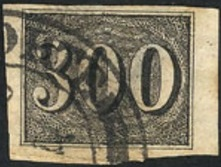
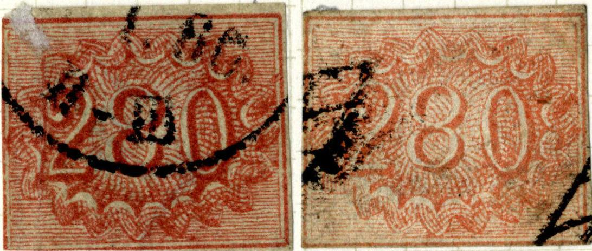

Return To Catalogue - Brazil 1843 issue - Brazil 1844 issue - Brazil 1866-1890 - Brazil 1891-1920 - Fiscal stamps, part 1 - Fiscal stamps, part 2 - Miscellaneous
Note: on my website many of the
pictures can not be seen! They are of course present in the
catalogue;
contact me if you want to purchase it.





10 r black 10 r blue (1854) 20 r black 30 r black 30 r blue (1854) 60 r black 90 r black 180 r black 280 r red (1861) 300 r black 430 r yellow (1861) 600 r black
Value of the stamps |
|||
vc = very common c = common * = not so common ** = uncommon |
*** = very uncommon R = rare RR = very rare RRR = extremely rare |
||
| Value | Unused | Used | Remarks |
| Imperforate (1850) | |||
| 10 r black | R | *** | |
| 10 r blue | *** | *** | 1854 |
| 20 r | RR | RR | |
| 30 r black | *** | * | |
| 30 r blue | RR | RR | 1854 |
| 60 r | *** | * | |
| 90 r | R | *** | |
| 180 r | RR | RR | |
| 280 r | RR | RR | 1861 |
| 300 r | RR | RR | |
| 430 r | RR | RR | 1861 |
| 600 r | RR | RR | |
| Perforated 13 1/2 (private perforation in Rio de Janeiro, 1866) | |||
| All values | RR | R (60 r) to RR | |
Imperforate reprints were made of all the black values in Januray 1910 on thick paper.
Forgeries of these stamps made by Spiro, examples:
(Reduced sizes)
The above forgeries are cancelled with a cancel as in the above 30 r and 240 r, dots or 4 concentric circles; the typical Spiro cancels.
The forger Fournier offers the two values 280 r and 430 r in his 1914 pricelist for 2 Swiss Francs. He sold them as first choice forgeries. I have no pictures of those available right now.
Fournier also offers second choice forgeries: all black values (8) for 2 Swiss Francs, or all values (12) for 2.50 Swiss Francs. Pictures of those can be found in 'The Fournier Album of Philatelic Forgeries'. They must be the same forgeries offered by Spiro (as shown above). However, I've been told that the next forgeries are also Fournier forgeries:
Reduced sizes
Sheet of Fournier forgeries.

The above 300 r Fournier forgery with forged cancel.


A forged Fournier cancel as can be found in 'The Fournier Album
of Philatelic Forgeries', 'CORREIO GERADACORTE 12(?) 18(?) 8 44'.
Note that there is no 'L' in 'GERADACORTE' (it should be
'GERALDACORTE'). This cancel was applied to the above 30 r
forgery. Note that the year 1844 is impossible.



The above forgery is a cut from the special souvenir card
produced for Clube Filatelico do Brasil in 1951. It is printed on
very thick paper and the design has been changed slightly. This
item has a coarse perforation very different from the genuine
stamp. The cancel appears to be 'CORREIO GERALDACORTE'?
Part of the reprint sheet made for the 'CLUBE FILATELICO DO
BRASIL Vigesimo Aniversario 18-XII-1931 - 18-XII-1951' from which
the above forgery was made.


Possibly cut outs from the above reprints sheet.


Second forgery of the 280 r of Album Weeds. The first one appears
to have a 'CORREOS 7.1.60. II-III' forged
cancel, also note the "K.K." (Zeitungs?) cancel.
Other forgeries:


The '10' is placed too low in this forgery of the 10 r. The 20 r
forgery next to it, is likely made by the same forger.
The '9' in this 90 r forgery does not have proper shading at the
bottom part. '90' is placed too far to the right (this is the
second forgery of the 90 r value listed in Album Weeds).


Forgeries of the 180 r, 300 r and 600 r with the '0's very
squeezed in the center.


Forgeries in bogus colors.
Probably also forgeries
For issues of Brazil from 1866 to 1920, click here.


{kind=link}
{kind=link}
{kind=link}
{kind=link}